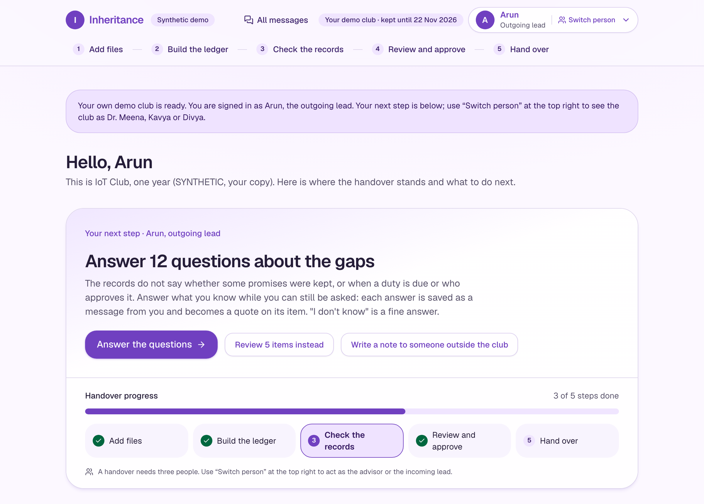
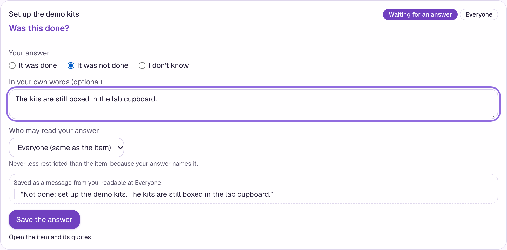
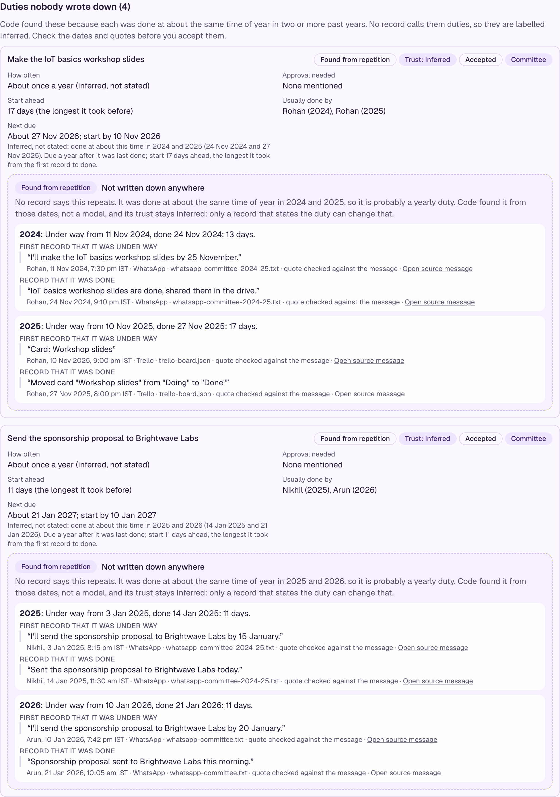
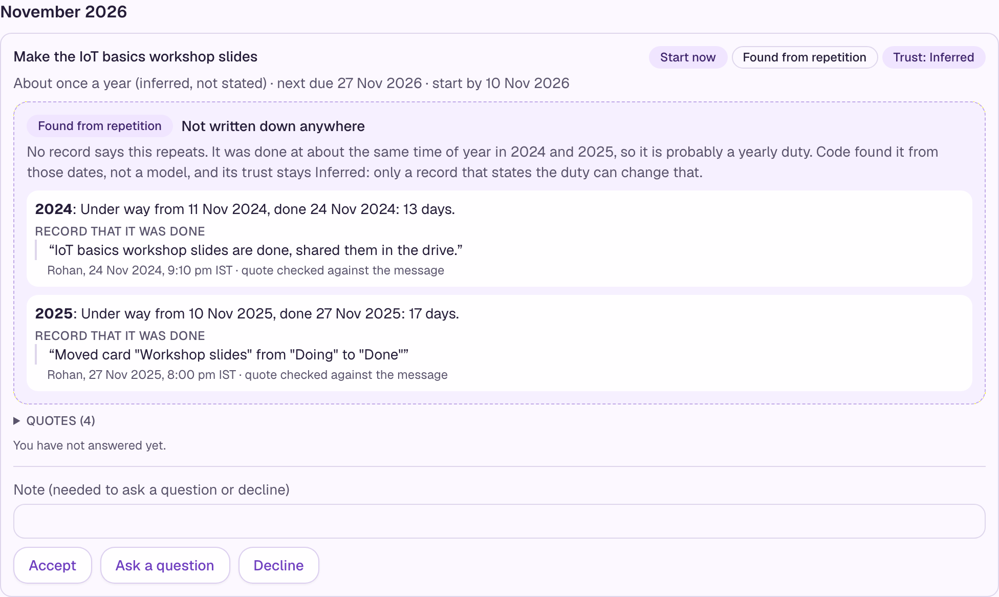
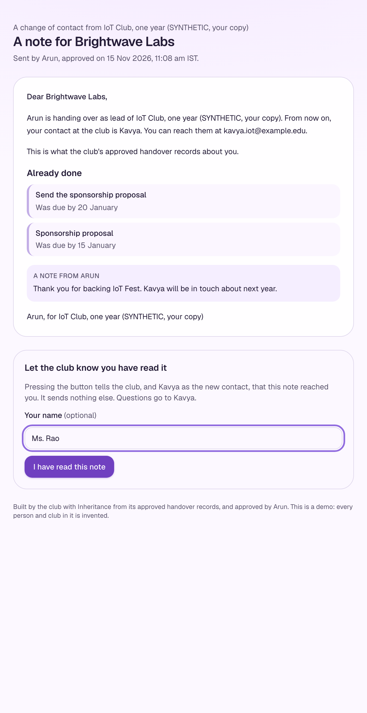
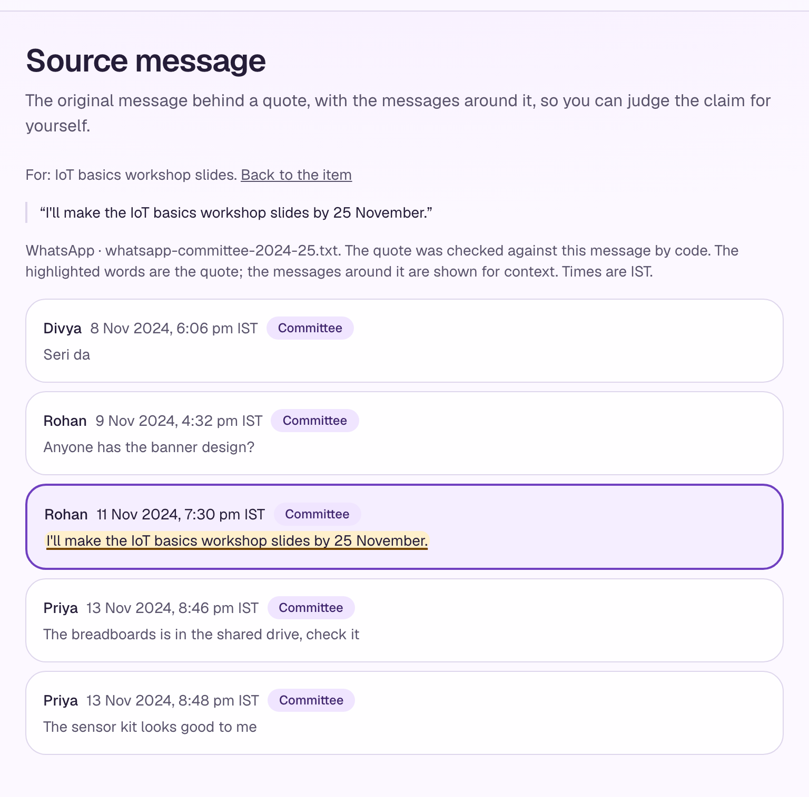

They left. Their promises didn’t.
Inheritance is a handover system for university student clubs. It reads a club’s WhatsApp exports, meeting minutes and Trello board, and builds a ledger of what the outgoing committee still owes: promises made to people, and duties that come round every year with the approvals they need. Every entry links to a quote that code has checked against its source; anything the records cannot support is shown as a gap; nothing reaches the incoming lead until the outgoing lead and the faculty advisor have reviewed and approved it; and each role sees only what the database allows it to read.
| Live product | https://inheritance-club-handover.vercel.app |
| Source code (public, MIT) | https://github.com/Karthikeyan-J-bounteous/inheritance-club-handover |
| Run it from the README | README → “Run it yourself” (about 15 minutes; no API key needed) |
How to try it with nobody explaining
Open the link and press Sign in, then Explore a built handover. In about half a minute you have your own private copy of two years of a synthetic IoT club’s records (2,255 messages in six files at four access levels), with the ledger already built by Claude and version 1 approved. No password is needed; the shared demo accounts and their password are also printed on the sign-in page.
The home page shows each person their next step with one button. Switch person (top right) moves between Arun (outgoing lead), Dr. Meena (faculty advisor), Kavya (incoming lead) and Divya (treasurer). Start from your own files gives an empty club instead: one click loads four sample files, then build, check, review, approve and hand over.
Five steps, five pages. Each is live on the link above and covered by end-to-end tests.
| Step | Who | What happens |
|---|---|---|
| Add files | Outgoing lead, advisor | WhatsApp .txt (Android, iPhone), Trello JSON, minutes (.md, .docx), several at once, each at a level: everyone, committee, finance or private. One-to-one chats start as private. A “what was read” report counts every dropped line by reason. Files are parsed, never stored. |
| Build the ledger | Outgoing lead, advisor | One button runs small steps with live progress: promises, recurring duties with approvals, follow-up checks, context notes, matching of the same item across files, and duties found from repetition alone. |
| Check the records | Outgoing lead, advisor, treasurer | Every quote opens its source message. A fixed rule sets trust. Conflicts wait for the advisor’s ruling; gaps say what would close them; the outgoing lead answers questions about the gaps. |
| Review | Outgoing lead, advisor | Accept, edit, reject or reopen each item with a reason. The lead marks the draft ready; the advisor approves an immutable version. Full audit history and a diff between versions. |
| Hand over | Incoming lead (and reviewers) | People waiting on her, a duty calendar with “Start now” and “Overdue”, already-done items, conflicts with both sides, sealed placeholders. She accepts, questions or declines each item; reviewers reply. Notes go to people outside the club by signed link. |
Trust labels, on every item, set by a rule and never by the model: CORROBORATED two independent records agree · SOURCED one verified quote · INFERRED implied or found from repetition, never shown as fact · CONTRADICTED records disagree · GAP no evidence kept.
All three were delivered as committed, each beyond its stated minimum. None was impossible. Each is shown in a judge’s own copy of the built club and covered by an end-to-end test that runs the whole journey.
Committed: infer duties from repetition alone, the same task at about the same point in two or more past cycles; compute a start-by date from past lead times; label each Inferred and list its occurrences.
add_inferred_duty()) and computes the dates and wording itself. Each year’s records are cited as inferred evidence, so the trust rule labels the duty INFERRED.Committed: every gap the records cannot close (no follow-up, no approver or date, an unruled conflict) becomes one short question; each answer is a labelled source that passes the same trust and audit rules and updates the next version.
answer_gap(). The quote check, trust rule, provenance, audit log, re-review flag and version diff apply unchanged. The form previews the exact message and warns if a stricter level would hide the item from someone. No model is called.Committed: a short change-of-contact note for each person or office the club owes something to, built only from approved items, edited and approved by the outgoing lead, opened from a signed link and acknowledged, with the acknowledgement on the handover.
/n/<id>.<signature>, an HMAC checked on the server before one service-only function reads that one note. No account, no app header, not indexed. One acknowledgement, audited.Taken from a fresh “Explore a built handover” copy on 15 Nov 2026. Synthetic data.






One Postgres database (Supabase). The shaded boxes hold the trust and permission logic; both run in the database as well as in code.
whatsapp-chat-parser, mammoth, a Trello reader) and calls import_source() as the signed-in user, so RLS checks every row written. Only events, a counts-only summary and the SHA-256 are kept.planRun writes one job per chunk of messages, duty batch, follow-up check, match batch and the repetition step. The browser calls POST /api/jobs/run-next until all are done, so no call runs long (Vercel’s 60-second limit). Each job reads only what its user may read; job rows hold ids and counts, never text.add_extracted_commitment, add_recurring_duty, record_followup, link_obligations, add_inferred_duty, answer_gap) repeat every check in SQL. Triggers set each item’s level from its cited messages, compute trust and status, open conflicts and write the audit log.review_obligation(), mark_ready(), approve_version() and rule_conflict(). A direct update is refused without a reason. Versions, acknowledgements, replies, notes once approved, and audit rows are immutable even for the service role.Next.js 16, React 19, TypeScript · Tailwind CSS, shadcn/ui (Radix) · Supabase (Postgres, Auth, RLS, pg_trgm) · Anthropic Claude API (Haiku 5.5) via @anthropic-ai/sdk · Zod · whatsapp-chat-parser, mammoth, yaml · Vitest, Playwright · Vercel Hobby with one daily cron.
| Layer | Tests | What it covers |
|---|---|---|
| Unit (Vitest) | 497 | Parsers, the trust and status rules, repetition finding, gap questions, note rendering, signed links, journey (next step), readiness, diffs, the scenario generator, and the offline pipeline over every scenario, scored. |
| Database and RLS (Vitest on local Supabase) | 220 | Each role’s rows; every database function’s refusals; audit rows; immutability; a mark approves one version; the leak test over both generated clubs; notes and gap answers; inferred duties; demo copies built through the real triggers. |
| End to end (Playwright) | 73 | Every journey in a browser, offline model: sign-in and roles; import; build; check; review and sign-off; handover; the whole flow on a second club; each Round 3 improvement in a visitor’s copy; guidance with no walkthrough; robustness (below); a per-role leak sweep of every page and source message. |
Robustness sweep (Phase 18), as a judge would try it: every page opened signed out asks you to sign in; odd addresses (malformed ids, unknown versions, version 0, a messages page past the end, broken or forged note links, unknown tabs, odd search text) are explained, never a crash; every page survives a refresh; a refresh in the middle of building carries on; Approve pressed twice makes one version; answers pressed twice are taken calmly. Bad files are refused with a reason (empty, not a chat, broken JSON, broken Word, unsupported type, too large, already imported). Each new test was first shown to fail with the fix removed.
Measured results against hand-written ground truth. Each synthetic club’s promises, duties, approvals, contradictions, decoys and restricted text were written by hand before any model saw the files; a deterministic scorer grades each run through the app’s own database pipeline (Claude Haiku 5.5).
| Club (date) | Messages | Promises | Status | Follow-up quotes | Conflicts | Duties (approver) | From repetition | Precision | Decoys | Leaks | Cost |
|---|---|---|---|---|---|---|---|---|---|---|---|
| Year (15 Nov) | 2,255 | 24/24 | 23/24 | 31/31 | 2/2 | 3/4 (3/3) | 4/4 | 88% | 0 | 0 | $0.040 |
| Photography (10 Nov) | 436 | 9/9 | 9/9 | 9/9 | 1/1 | 4/4 (4/4) | — | 90% | 0 | 0 | $0.013 |
| Mini (10 Nov) | 21 | 5/5 | 5/5 | 5/5 | 1/1 | 2/2 (2/2) | — | 100% | 0 | 0 | $0.004 |
What the model still gets wrong (all visible to a reviewer, none hidden): one done promise is a false conflict (two filler lines read as “not done”); one past-year proposal borrowed this year’s “sent” messages and shows Corroborated instead of Sourced; one stated duty (hold the annual fest) is missed; five extra items are left as drafts for the reviewer.
Checks before submission: lint, type check and production build clean; the full suite passing on the final commit; the deployed app checked in a private window as each person.
User feedback: none yet. The Round 1 interviews and usability test were not carried out (see 10).
| When | What | Why |
|---|---|---|
| Next 4 weeks: pilot | Run the handover of 3 to 5 real clubs at one university with their consent, at the end of the academic year. Do the 8 to 12 office-bearer interviews promised in Round 1 and a usability test (raw exports against Inheritance). | The hypothesis (most first-month problems are unknown obligations) is still untested by users. Real chats will show which mistakes matter. |
| Next 3 months: close the known gaps | The lead confirms or denies an inferred duty; edit or withdraw a gap answer; supersede and re-issue a note; send a note by email or WhatsApp from the app and record that it was sent; merge counterparties through aliases; semester and per-event repetition; paraphrase-aware leak checks; a formal accessibility audit. | Each is listed in the known gaps; none needs a new architecture. |
| Next 6 months: less manual work | Import straight from Google Drive (minutes) and the Trello API, and a share-sheet path for WhatsApp exports; larger files through storage with deletion after parsing; the incoming lead’s calendar sent as reminders (email or calendar file) before each start-by date. | Exporting files by hand is the biggest step before the product is useful. |
| Next year: the institution | A student-affairs view across all clubs of a university (which handovers are approved, which duties need the office’s approval this month), with the same row-level security; templates per club type; Tamil and Hindi interfaces. | The office that approves club activities is the natural buyer and the place where continuity breaks most visibly. |
| Later: all year, not only at handover | Keep the ledger live during the year so promises and duties are tracked as they happen; the handover becomes approving what is already there. A self-hosted package and a local-model option for universities that cannot send chats to an external API. | Handover quality depends on what is recorded during the year. |
Sustainability: free for student clubs on free hosting tiers (a build of a year of chat costs about four US cents of model time, and saved answers make rebuilds free); a paid institution plan for universities covering the all-clubs view, single sign-on and self-hosting.
docs/ai-disclosure.md, docs/changes-from-round1.md, docs/known-gaps.md.